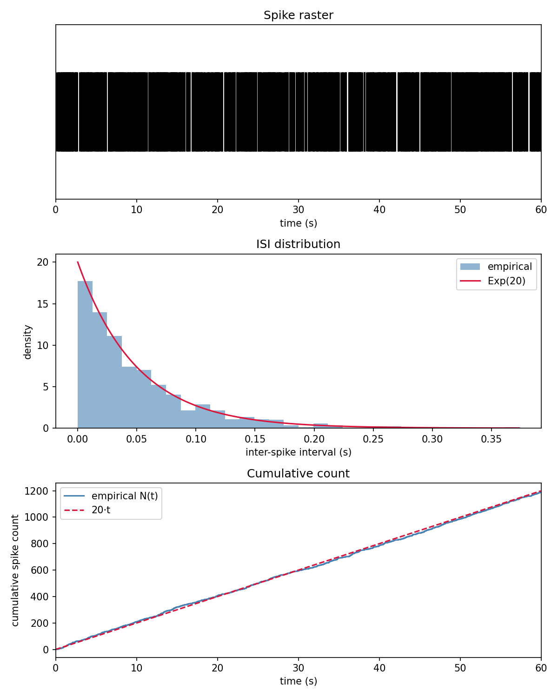
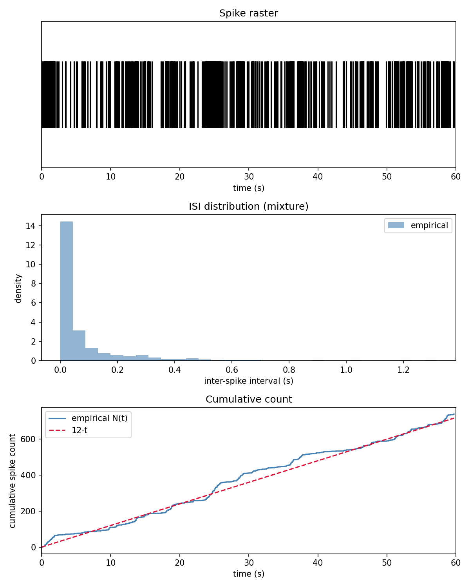

Évaluation¶
Dernière mise à jour : semaine 8 (fin juin 2026).
Cette page présente la stratégie de test, les résultats obtenus sur le neurone de Poisson homogène puis sur le neurone MMPP, leur interprétation et les limites actuelles.
Méthodes de validation¶
La validation opère à deux niveaux que le projet garde volontairement séparés : les tests automatisés vérifient ce qui est déterministe, et l'expérience valide ce qui est statistique.
La suite pytest (44 tests) couvre les invariants structurels et déterministes. Côté structure : le câblage des sous-modèles, les gardes de validité qui lèvent une exception (rate > 0 pour le neurone de Poisson ; pour le MMPP, taux strictement positifs, \(Q\) carrée et compatible avec rates, lignes de somme nulle, hors-diagonale non négative, taux de sortie strictement positif), le timeAdvance infini du Transducer, et l'enregistrement chronologique des couples (temps, payload) dans l'horizon de simulation. Côté déterminisme : la reproductibilité par graine (deux modèles de même graine produisent exactement la même séquence de tirages), la pureté et la positivité de timeAdvance, et l'exactitude des fonctions de calcul (compute_isi, theoretical_stats).
Le MMPP ajoute une couche de tests propre à sa machine à états : la résolution correcte des deux horloges concurrentes (victoire du spike, victoire de la transition, priorité au spike en cas d'égalité), le décrément de l'horloge de transition plutôt que son re-tirage quand un spike gagne, et la généricité du nombre d'états (une chaîne à trois états simule sans cas particulier).
Aucun de ces tests ne vérifie que le taux empirique tombe près de sa valeur théorique. C'est le principe directeur de la stratégie : une assertion portant sur une grandeur aléatoire serait soit instable, soit trivialement vraie. Tester le déterminisme et valider le hasard sont deux activités distinctes, et les mélanger affaiblirait les deux.
La validation statistique est donc confiée aux expériences. Pour le neurone de Poisson, run_basic_experiment compare un train simulé aux prédictions du modèle homogène : le compte de spikes contre \(\lambda \cdot T\), l'intervalle inter-spikes moyen contre \(1/\lambda\), et le taux empirique contre \(\lambda\). Pour le MMPP, run_mmpp_experiment compare le compte observé au taux effectif \(\bar\lambda = \sum_i \pi_i \, \lambda_i\), où \(\pi\) est la distribution stationnaire de la CTMC modulante. Dans les deux cas, l'intervalle de confiance à 95% sur le compte vient de l'approximation normale \(\mu \pm 1.96\sqrt{\mu}\), et une figure à trois panneaux complète la comparaison numérique par une inspection visuelle.
Résultats obtenus¶
La suite pytest passe entièrement au vert (44 tests), confirmant les invariants structurels et déterministes des modèles, de la couche RNG et de la couche d'analyse.
Neurone de Poisson homogène¶
La validation statistique est lancée par :
python -m simubrain.experiments.run_basic_experiment --rate 20 --duration 60 --seed 42
Pour ce neurone à \(\lambda = 20\) Hz simulé sur 60 secondes (seed 42) :
- compte de spikes : 1190 mesurés contre 1200 attendus, dans l'intervalle de confiance à 95% [1132, 1268] ;
- intervalle inter-spikes moyen : 0.0503 s contre 0.0500 s attendu ;
- taux empirique : 19.833 Hz contre 20 Hz attendu.

Validation du neurone de Poisson homogène (\(\lambda = 20\) Hz, 60 s, seed 42). En haut : raster des spikes. Au milieu : distribution empirique des ISI superposée à la densité théorique \(\text{Exp}(20)\). En bas : comptage cumulé \(N(t)\) contre la droite \(20 \cdot t\).
Neurone MMPP¶
La validation est lancée par :
python -m simubrain.experiments.run_mmpp_experiment --duration 60 --seed 42
Le cas de référence est le neurone à deux états repos / actif : taux \(\lambda_0 = 5\) Hz et \(\lambda_1 = 40\) Hz, générateur \(Q = \begin{pmatrix} -0.5 & 0.5 \\ 2.0 & -2.0 \end{pmatrix}\) (taux de sortie \(q_0 = 0.5\)/s au repos, \(q_1 = 2.0\)/s en actif). La distribution stationnaire est \(\pi = (0.8, 0.2)\), d'où un taux effectif \(\bar\lambda = 0.8 \cdot 5 + 0.2 \cdot 40 = 12\) Hz, soit 720 spikes attendus sur 60 secondes, avec un intervalle de confiance à 95% [667, 773].
Pour ce neurone simulé sur 60 secondes (seed 42) :
- compte de spikes : 739 mesurés contre 720 attendus, dans l'intervalle de confiance à 95% [667, 773] ;
- taux empirique : 12.317 Hz contre 12 Hz attendu (\(\bar\lambda\)) ;
- intervalle inter-spikes moyen : 0.0808 s contre 0.0833 s attendu (\(1/\bar\lambda\)).

Validation du neurone MMPP (repos \(\lambda_0 = 5\) Hz, actif \(\lambda_1 = 40\) Hz, \(\bar\lambda = 12\) Hz, 60 s, seed 42). En haut : raster des spikes, où la signature MMPP est visible à l'oeil (bandes denses à 40 Hz en état actif, zones clairsemées à 5 Hz au repos). Au milieu : distribution empirique des ISI, sans superposition exponentielle puisque la loi est une mixture. En bas : comptage cumulé \(N(t)\) contre la droite \(\bar\lambda \cdot t\), en escalier (plateaux au repos, montées raides en bouffée).
Analyse critique¶
L'objectif des deux étapes, valider qu'un neurone de Poisson homogène puis un neurone à taux modulé par une CTMC exprimés en DEVS reproduisent la théorie, est atteint.
Pour le Poisson, le compte observé est à environ 0.3 écart-type sous la moyenne attendue (l'écart-type vaut \(\sqrt{1200} \approx 35\) spikes), donc largement à l'intérieur de l'intervalle de confiance. Les trois métriques pointent dans la même direction, légèrement sous le nominal : ce ne sont pas trois confirmations indépendantes, mais un même déficit de quelques spikes observé sous trois angles, exactement le genre de fluctuation attendue d'un tirage unique. Visuellement, la distribution des ISI épouse la densité exponentielle et le comptage cumulé suit linéairement \(\lambda t\) sans dérive.
Pour le MMPP, le compte observé est à environ 0.7 écart-type au-dessus de la moyenne attendue (l'écart-type vaut \(\sqrt{720} \approx 27\) spikes), bien à l'intérieur de l'intervalle de confiance. La validation porte ici sur le bon critère : le compte d'un MMPP est asymptotiquement Poisson de moyenne \(\bar\lambda T\), donc c'est \(\bar\lambda\) et non un taux instantané qui doit être retrouvé. C'est aussi pourquoi le panneau ISI n'a pas de superposition exponentielle : la loi des ISI d'un processus modulé est une mixture sur-dispersée, et un overlay \(\text{Exp}(\bar\lambda)\) aurait été trompeur, laissant croire à un défaut là où il n'y en a pas. La moyenne des ISI coïncide bien avec \(1/\bar\lambda\), mais c'est une coïncidence de moyenne, pas d'égalité de distribution. La signature en bouffées du raster et l'allure en escalier du comptage cumulé confirment visuellement la modulation.
Le découplage entre la couche de modèles et la couche d'analyse paie sur cette extension : les panneaux raster et comptage cumulé ont été réutilisés tels quels pour le MMPP, et seul le panneau ISI a dû être spécialisé, ce qui a mis au jour une fuite d'abstraction (le docstring promettait à tort la réutilisation intégrale pour toute source future). La correction a consisté à dire la vérité sur ce qui se réutilise, plutôt qu'à forcer une réutilisation incorrecte.
Les résultats portent toutefois sur une seule exécution par modèle : ils établissent la correction sur un cas, pas la robustesse statistique. Un écart systématique faible resterait indétectable à ce stade.
Limites du projet¶
- Portée des modèles : le neurone de Poisson homogène et le neurone MMPP sont validés. Les G-networks et le méta-formalisme unifié ne sont pas encore implémentés ni évalués.
- Profondeur statistique : la validation repose sur une exécution unique par configuration. Une campagne agrégeant plusieurs graines permettrait d'estimer la dispersion réelle du compte plutôt que de constater un seul tirage. De plus, l'approximation normale de l'intervalle de confiance n'est fiable que pour de grands comptes attendus ; aux faibles taux ou courtes durées, des quantiles de Poisson exacts seraient préférables.
- Portée des tests automatisés : pytest garantit la correction structurelle et déterministe, mais l'exactitude statistique dépend d'une inspection manuelle des sorties d'expérience.
- Dépendances externes : la simulation repose sur PyPDEVS, et la reproductibilité dépend du générateur
default_rngde numpy, dérivé viaRandomStream.